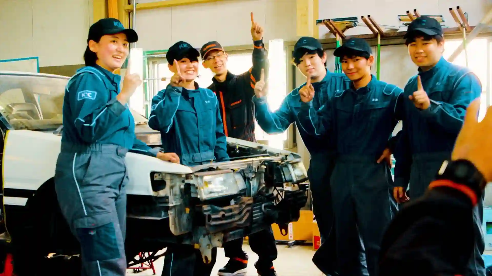

学生たちの手で甦る、
伝説の名車。
KICがこれまで挑んできたレストアプロジェクト。
クルマのすべてを学び尽くす「一級自動車工学科」と
板金・塗装のスペシャリストを目指す「車体整備工学科」。
誇り高い2つの学科がコラボレーションしたレストアプロジェクトができるのはKICならでは。
トヨタカローラ福岡のプロエンジニアと一緒に果敢に挑み実現させる産学共同プロジェクト。
クルマのすべてを学び尽くす「一級自動車工学科」と
板金・塗装のスペシャリストを目指す「車体整備工学科」。
誇り高い2つの学科がコラボレーションしたレストアプロジェクトができるのはKICならでは。
トヨタカローラ福岡のプロエンジニアと一緒に果敢に挑み実現させる産学共同プロジェクト。

久留米自動車工科大学校
一級自動車工学科
一級自動車整備士を目指す7名の学生たち。
今回のプロジェクトにおいて、主にエンジンを担当。
エンジンをバラバラにして部品単位まで新品同様に修復、
ホコリ、油、錆にまみれていた4A-GE（エンジン）を
パワフルに力強く呼び起こします。
今回のプロジェクトにおいて、主にエンジンを担当。
エンジンをバラバラにして部品単位まで新品同様に修復、
ホコリ、油、錆にまみれていた4A-GE（エンジン）を
パワフルに力強く呼び起こします。
クルマの構造・進化を深く理解し
これからの未来を担うトップエンジニアに。
久留米自動車工科大学校
車体整備工学科
車体整備士を目指す21名の学生たち。
錆で朽ち果てていた、ボロボロのボディを修復。
経年劣化により傷んでいる箇所は鉄板を整形して再生。
今にも走り出しそうな新車の輝きを取り戻し
復活へと命を吹き込みます。
錆で朽ち果てていた、ボロボロのボディを修復。
経年劣化により傷んでいる箇所は鉄板を整形して再生。
今にも走り出しそうな新車の輝きを取り戻し
復活へと命を吹き込みます。
ボディの修復からカスタマイズまで
完璧にマスターする板金・塗装のスペシャリスト。
トヨタカローラ福岡
プロエンジニア
トヨタカローラ福岡のプロエンジニア。
若い世代に車に興味を持ってもらおうと、販売元のカローラ福岡が
AE86 LEVINを下取りし、学校側にレストアを呼びかけました。
トヨタエンジニアの最上位資格TOP CREWを持った
二人のレジェンドが、技術支援として参加。
エンジニアを目指す学生と挑む、産学協同プロジェクト。
若い世代に車に興味を持ってもらおうと、販売元のカローラ福岡が
AE86 LEVINを下取りし、学校側にレストアを呼びかけました。
トヨタエンジニアの最上位資格TOP CREWを持った
二人のレジェンドが、技術支援として参加。
エンジニアを目指す学生と挑む、産学協同プロジェクト。

全国トップクラス。
TOYOTAエンジニアのレジェンド。

エンジニアを目指すKICの学生たちが、
プロのエンジニアと挑む！